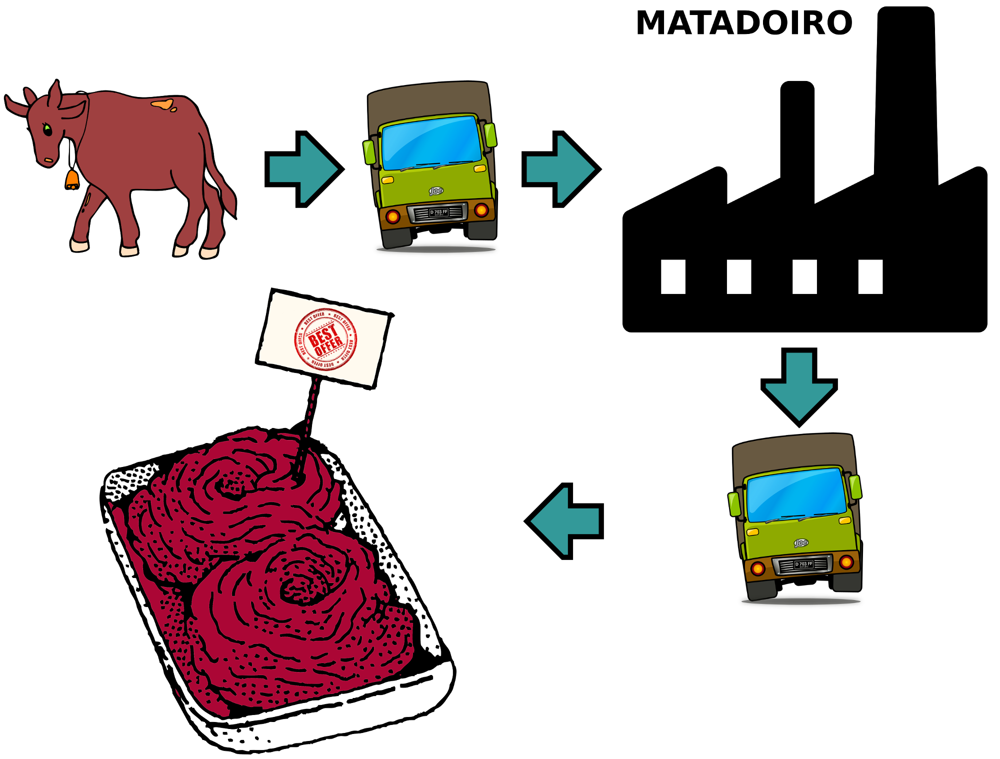
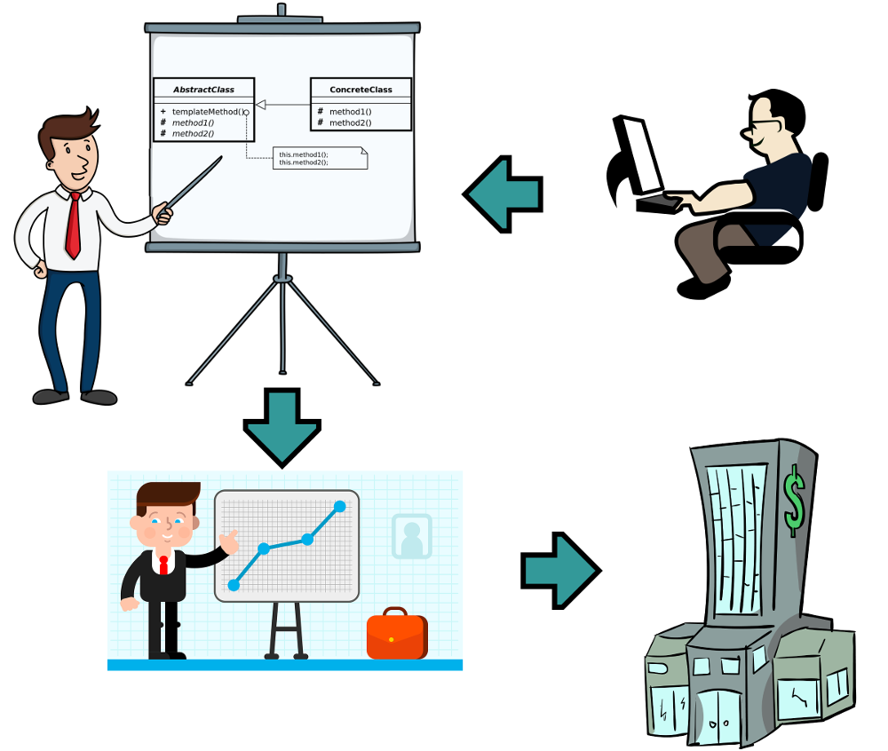
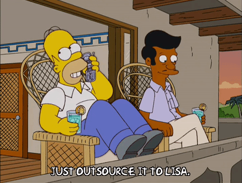

Guía de supervivencia para o desenvolvedor novato
Pablo Castro - @castrinho18
Brais Árias - @braisarias
castrinho8.gitlab.io/free-sofware-and-jobs
Que é o Software Libre?
Usao para o que queiras
Ver o código e incluso modificalo (open source)
Distribuir copias
Modificar o programa e distribuir as modificacións
Licencias
Copyleft
GPL
AGPL
...
Copyleft suave
LGPL (Lesser General Public License)
MPL (Mozilla Public License)
...
Permisivas - non copyleft
BSD
Apache
MIT/Expat
...
Por qué é mellor que o privativo?
Axuda a mellorar
Calidade + Seguridade
Independencia tecnolóxica
Propiedade colectiva
Sin restriccións de uso
Maior Competencia
+ asequible
+ calidade
+ seguridade
...
Modelos negocio
- Innovación -> non reinventar o mesmo
- Soporte
- Customización
- Facilita a distribución do producto
- ...
Non é ouro todo o que reluce

Cousas que aparentemente son libres
Vulnerabilidades
¿Privacidade?
Privativo = Portas traseiras
Futuro laboral
Que é unha Carnica?
v1.0
Que é unha Carnica?
v4.0
O Bolseiro - Carnicas
Carnicas - Subcontratas
Carnicas - Traballo en cliente
Carnicas - "Hora de regalo para ..."
Carnicas - Tecnoloxías de vanguardia...
Oh wait!
Carnicas - "Programa de carreira"

Cómo recoñecelas?
"Lider do sector..."
"Salario acorde ao candidato"
"Planes de Carrera"
"Con presencia internacional"
....
Alternativas
Funcionariado?
Empresa pequena/cooperativas
Empresa de producto (startup)
Emprender
Que podemos facer na universidade para non acabar sendo carne?
Participa en asociacións
ONGs
congresos
hackathons
representantes de alumnos.
...
Liberar software
O teu curriculum é GitHub/GitLab/Bitbucket...
- Prácticas,
- experímentos,
- TFG/TFM